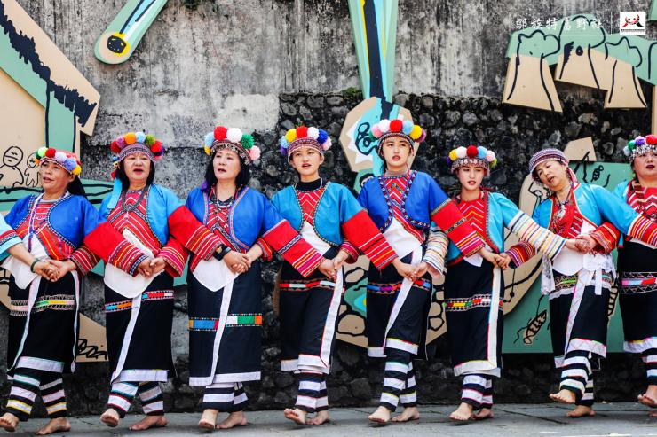

族群介紹
鄒族主要分布在阿里山地區，傳統社會以男子集會所（kuba）為核心， 透過祭典、會議與歌舞來維繫族群記憶與文化傳承。
鄒族的年祭、戰祭等祭典十分重要，族人透過歌唱、擊鼓與舞蹈， 表達對祖靈、自然與部落的敬意，也展現出強烈的群體意識與榮譽感。
地理位置（Google 地圖示意）
照片與影片介紹
鄒族文化照片
影片介紹
鄒族主要分布在阿里山地區，傳統社會以男子集會所（kuba）為核心， 透過祭典、會議與歌舞來維繫族群記憶與文化傳承。
鄒族的年祭、戰祭等祭典十分重要，族人透過歌唱、擊鼓與舞蹈， 表達對祖靈、自然與部落的敬意，也展現出強烈的群體意識與榮譽感。